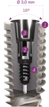
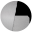
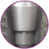
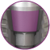

Uma base estável e forte, projetada para o sucesso a longo prazo
A interface pilar/implante é essencial para um resultado funcional e
estético bem-sucedido a longo prazo. A Interface Neodent® Grand Morse®
oferece uma combinação exclusiva baseada em conceitos comprovados:
Platform Switching associado a um profundo cone Morse de 16°,
incluindo uma indexação interna para uma interface forte e estável,
desenhada para alcançar resultados duradouros

1
Platform Switching
Preservação da crista óssea e perfil de emergência estável com a
aplicação do conceito Platform Switching (5-9)

2
Manuseio eficiente devido a uma única interface cônica
Precisão no ajuste e posicionamento: novo índex protético GM Exact

3
Nova interface cônica
Maior contato da interface pilar/ implante, permitindo uma
distribuição ideal das cargas recebidas

4
Interface cone Morse com 16º
Maior estabilidade mecânica e distribuição homogênea de carga,
ideal para redução de campos de tensão(10) , microgaps e
micromovimentos
Dr. JOE BHAT, Reino Unido
‘‘A nova linha GM tem sido a ferramenta mais eficaz que usei em minha
prática. No que diz respeito à reconstrução e para carga imediata’’